3.1.1. Task 1: Install the F5 Splunk app in Splunk¶
In the Chrome browser on your Windows jump box, click the bookmark for Splunk to launch the Splunk web UI
On the Splunk Enterprise splash page, if you are prompted for an update, click Skip update
In the Splunk Web GUI, click on the settings button next to Apps (on the left) to Manage Apps
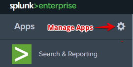
Click Install app from file
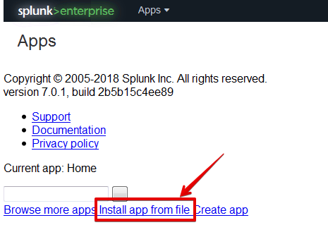
Click Choose File
In the file browser window, navigate to Desktop > Analytics Lab Files, and choose the f5-networks-analytics-new_100.tgz file and click Open
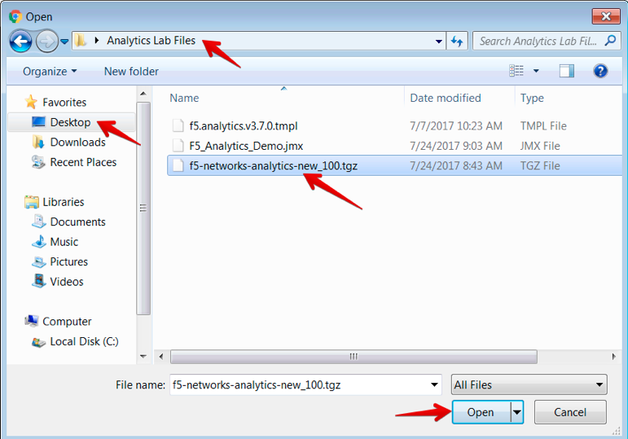
Click Upload
Once the upload is complete, you should see the F5 Networks app listed in the Apps table, with the Status set to Enabled
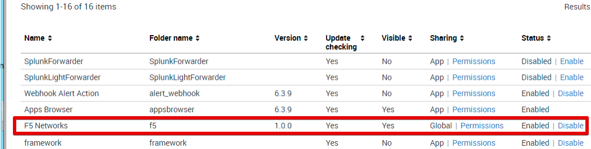
Click the Splunk logo in the top-left to go to the start page. You should now see the F5 Networks app listed on the left
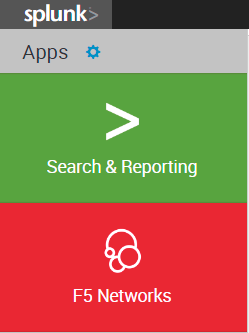
Now click the Settings menu in the top-right, and choose Data inputs
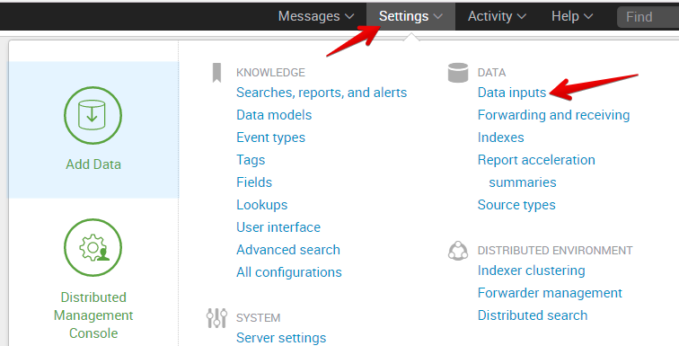
Click on HTTP Event Collector
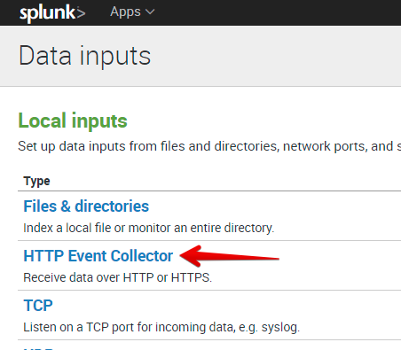
Click on Global Settings in the top-right
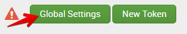
In the Edit Global Settings window:
- Click on Enabled for All Tokens
- Ensure that Enable SSL is checked
- Ensure that HTTP Port Number is set to 8088
- Click Save
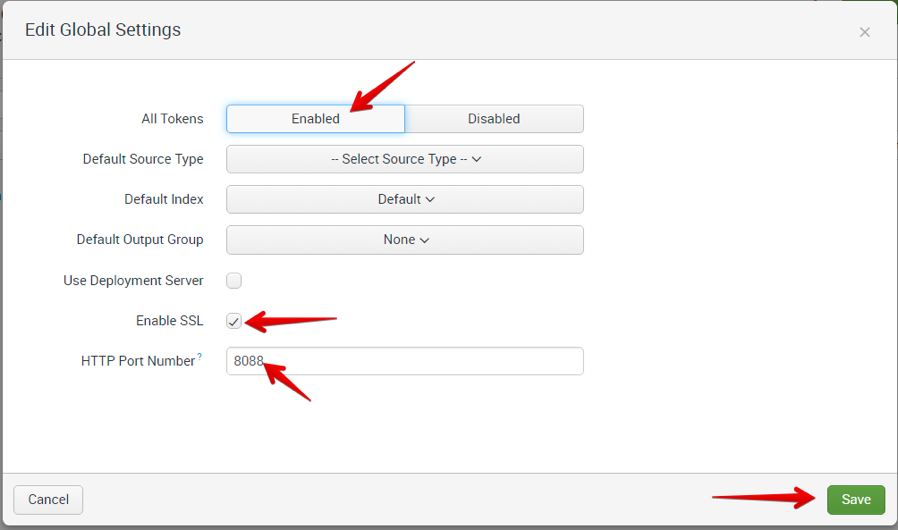
Note
Ensure that all of the above settings are exactly as shown, otherwise no data will show up in Splunk.
Click New Token in the top-right
For the Name, enter F5-Analytics, and then Click Next > at the top
On the Input Settings page, scroll down till you see Default Index, and then click the Create a new index link
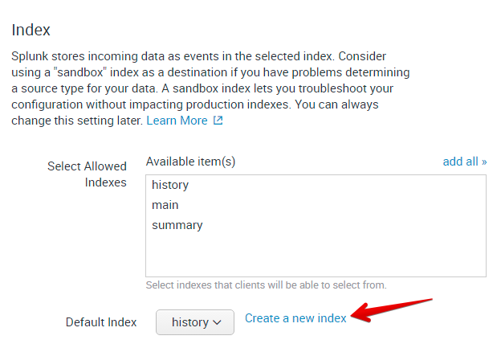
In the New Index window, enter f5-default for the Index Name, and click Save
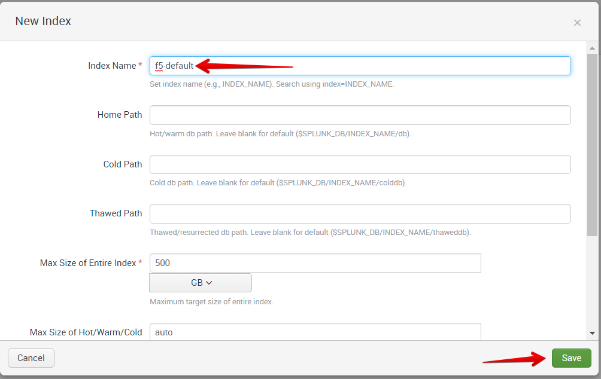
In the Select Allowed Indexes table, click f5-default to move it to Selected item(s)
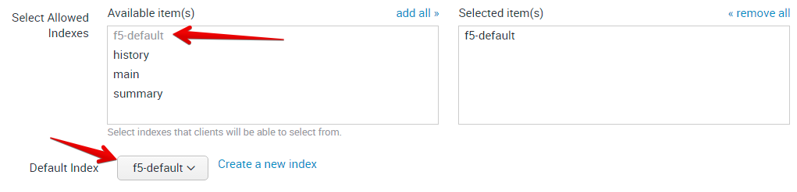
Click Review at the Top
Ensure your settings match those shown in the screenshot below, then click Submit
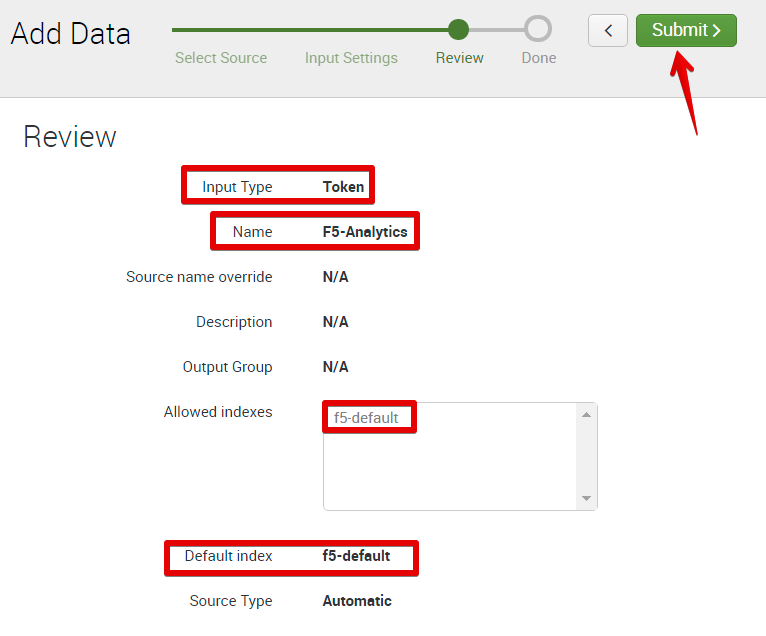
Once your token has been created, highlight the Token Value for the newly created Token, and copy it to your clipboard (Ctrl-C or Right-click > Copy). We will use this later.
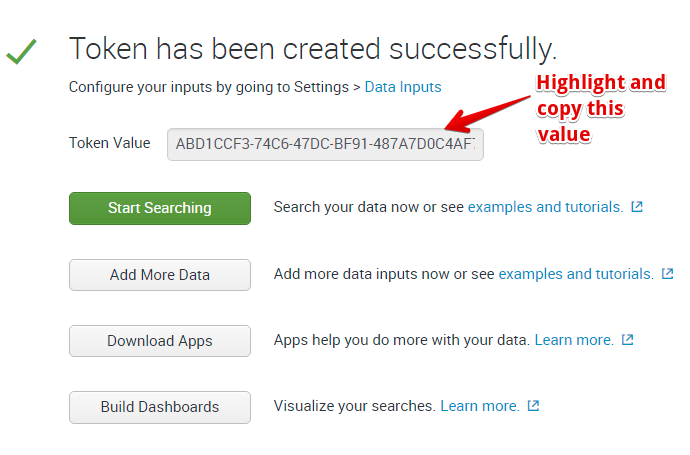
Note
Your token value will be different from the one shown above
Click on the Splunk logo in the top-left to go back to the Splunk start page.